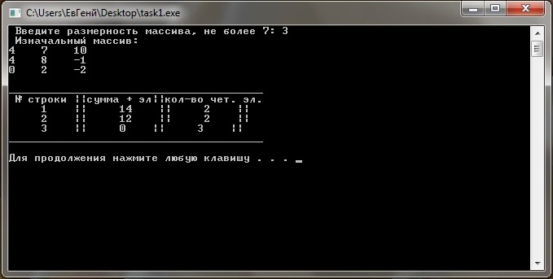
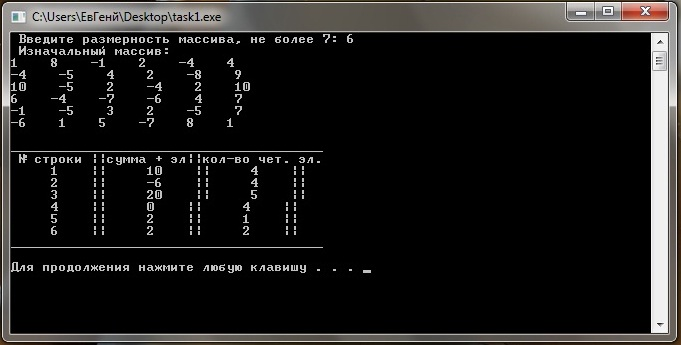
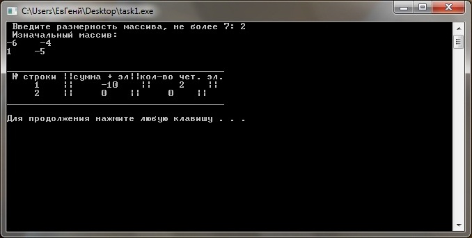

Лабораторное задание №9. Двухмерные числовые массивы.
Условие задачи
С помощью
генератора случайных чисел сформировать квадратную матрицу вещественных чисел
размерности
m x m, где
значение
m <=7
вводится с клавиатуры. Диапазон формируемых в матрице значений от
–8 до +10.
Написать программу, в которой предусмотреть подсчет в каждой строке количества
четных элементов и их сумму. В результате на экран вывести сформированную
матрицу, значения количества и суммы элементов с номерами соответствующих строк.
Подсчет в
строке значения количества четных элементов и их сумму, оформить в виде функции.
Математическая модель
Для решения поставленой задачи необходимо использовать ГСЧ и функцию ( koli4estwo_ilementow).
Сначала вводится число m размерностью не больше 7, далее
производится проверка вода на корректность если ввод произведен не
правильно то выводится сообщение об ошибке. Далее определяется ГСЧ и
при помощи двух циклов формируется матрица с значениями от -8 до 10.
После чего сформированая матрица выводится на экран и
подключается ф-ия ( koli4estwo_ilementow), которая будет вычислять количество четных элементов и их сумму.
В этой ф-ии при помощи двух циклов выбираем некоторый элемент (mass[i][j])
который проверяется на четность. Если элемент четный то в новый массив
в первый столбец записываем номер строки, во второй столбец записываем
сумму четных элементов, а в третий столбец записываем количество четных
элементов. Если же элемент не четный то поисходит проверка на то что а
существуют ли в этой строке четные элементы, если нет то в первый
столбец записываем номер строки, а в остальные столбцы записываем нули.
Далее после того как выполнилась ф-ия происходит
вывод нового массива в виде таблицы (1 столбец - номер строки, 2
столбец - сумма четных элементов, а 3 столбец - колличество четных
элементов).
Описание алгоритма
Для решения поставленой задачи подключить библиотеку <time.h> необходимую для генирации случайного числа. Далее определяем массив mass размерностью
8 на 8 и массив а размерностью 8 на 3, в который будем записывать: в 1
столбец номер строки, во 2 столбец сумму четных элементов строки, а в 3
столбец будем помещать количество четных элементов. После чего
определяем функцию koli4estwo_ilementow,
которая будет описана позней. Далее выводим сообщение о том что нужно
ввести размерность массива не более 7. После чего делаем проверку числа
на корректность ввода. Если число удовлетворяет отрезку [1,7] то
определяем Генератор Случайных Чисел (ГСЧ), а уже затем при помощи двух
циклов присваиваем каждому элементу массива определенное значение
которое сгенерировал ГСЧ в диапазоне от -8 до 10. Затем при помощи двух
циклов выводим полученный массив на экран. Далее подключаем ф-ию koli4estwo_ilementow.
При помощи этой функции мы будем
записывать в массив "а": номер строки, сумму четных элементов строки и
количество четных элементов этой строки. Для начала определяем 3
переменные ( sum, kl, znak ).
В которые будем помещать соответственно: сумму положительных элементов,
количество положительных элементов, и переменная необходимая на
тот случай если в строке небудет не одного четного элемента. Далее при
помощи двух циклов, необходимых для выборки элемента из массива, после
чего используем инструкцию if (mass[i][j]%2==0) который осуществляет проверку числа (mass[i][j]) на четность. Если элемент (mass[i][j]) четный то к переменной kl прибовляем еденицу (эта переменная вычисляет колличество положительных элементов), к переменной sum ( хронящая сумму четных элементов ) добовляем элемент mass[i][j], а затем в 1 столбец массива помещаем номер строки, далее во 2 столец помещаем переменную sum. и в 3 столбец помещаем переменную kl ( хронящая количество четных элементов ). А в теле инструкции else if (mass[i][j]%2==1) к переменной znak добавим 1. Далее делаем проверку if (znak=m)
и записываем в 1 столбец номер строки. Т.е эта переменная предазначена
на тот случай если в строке не окажится не одного четного элемента и
если это произошло то в 1 столбец запишется номер строки, а в остольнае
столбцы запишутся нули. т.к после вложеного цикла эти переменные
зануляются.
После того как функция koli4estwo_ilementow выполнилась происходит вывод на экран сформулированую матрицу "а" в виде таблицы.
Текст программы с комментариями
# include <iostream>
# include <stdio.h>
# include <time.h>
using namespace std;
const int strok=8, stolb=8;
int mass [strok][stolb]; // заводим массив размером 8х8
int a [strok][3]; // заводим массив размером 8х3
int koli4estwo_ilementow (int m)
{
int sum=0, kl=0, znak=0;
for (int i=1; i<=m; i++)
{
for ( int j=1; j<=m; j++)
{
if (mass[i][j]%2==0)
{
kl++;
sum+=mass[i][j];
a[i][1]=i; // номер строки
a[i][2]=sum; //сумма четных элементов в строке
a[i][3]=kl; //количество четных элементов
}
else if (mass[i][j]%2==1)
{
znak++;
if (znak=m)
{
a[i][1]=i; // номер строки в том случае когда в строке нет четных элементов
}
}
}
kl=0, sum=0, znak=0; // зануление элементов
}
return (a[m][3]);
}
int main()
{
int m=0;
cout << " Введите размерность массива, не более 7: "; // ввод размерности массива
cin >> m;
if (m<0 || m>7) // провека на корректность ввода
{
cout << " Размерность введена не правильно " << endl;
return 1;
}
srand (( unsigned) time(NULL)); // определение ГСЧ
for (int i=1; i<=m; i++)
{
for (int j=1; j<=m; j++)
{
mass[i][j]=rand()%19-8; // запись произвольного числа
}
}
cout << " Изначальный массив: " << endl; // вывод сформулированого при помощи ГСЧ массива
for (int i=1; i<=m; i++)
{
for (int j=1; j<=m; j++)
{
cout << mass[i][j] << " ";
}
cout << endl;
}
cout << endl;
// включение ф-ии
int z=0;
z=koli4estwo_ilementow (m);
// 1 столбец- номер строки, 2 страка -сумма элементов 3 строка- количество четных чисел.
cout << "_______________________________________" << endl; // вывод массива в виде таблицы
cout << " № строки ||сумма + эл||кол-во чет. эл." << endl;
for (int i=1; i<=m; i++)
{
for (int j=1; j<=3; j++)
{
cout << " "<< a[i][j] << " ||";
}
cout << endl;
}
cout << "_______________________________________"<< endl;
cout << endl;
system ("pause");
return 0;
}
Откомпилированный файл может быть получен по ссылке
Тесты и анализ результатов
Тест 1
При вводе размерности массива равному 3.
Результат работы программы представлен на рисунке ниже

Тест 2
При вводе размерности массива равному 6.
Результат работы программы представлен на рисунке ниже

Тест 3
При вводе размерности массива равному 2.
Результат работы программы представлен на рисунке ниже
